专题和头条
插件目前提供 3个专题和 21个头条
专题
每个专题中必须选择6本图书
1241521
12414


头条目前仅供默认模板和qidian使用

小说插件9.7.1版本起，语音朗读技术更换为百度语音，因讯飞关闭了html5平台的文字转语音接口
插件中已内置百度语音技术，可朗读章节正文，要使用此功能，必须先申请百度语音的 API Key 和 Secret Key，并填写到插件设置页面的 百度语音API Key 和 百度语音Secret Key 选项中
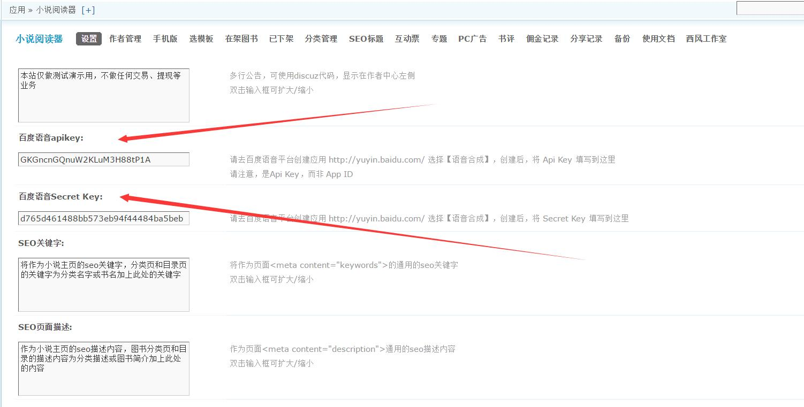
默认填写的是一个测试用api key和 secret key。接口调用次数受限制，为了正常使用，你需要去申请自己的来进行替换。
申请页面网址
http://yuyin.baidu.com
如果你有百度帐号，请点击登录，如果没有，请注册。成功登录后，再点击此 应用管理 按钮
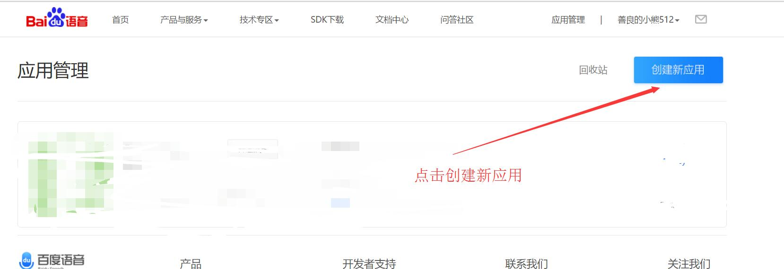
单击 创建新应用，会弹出如下提示，然后输入应用名称和选择应用类型
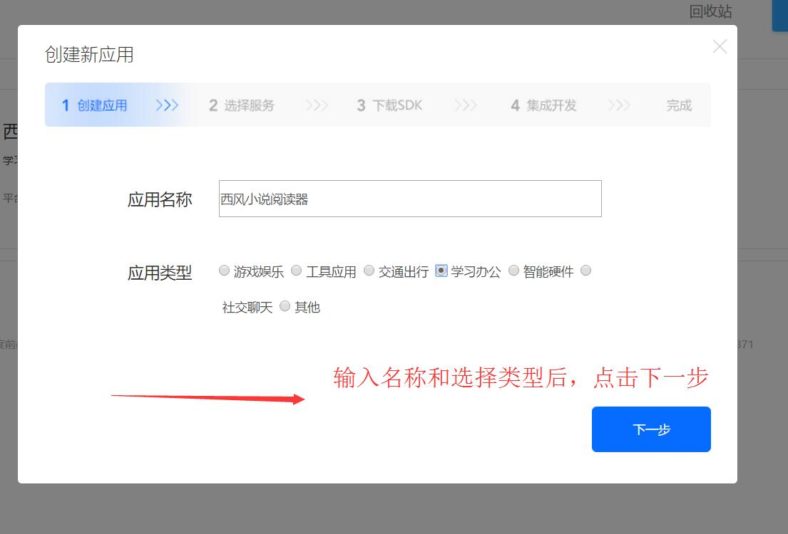
然后点击下一步，这一步中，必须选中 语音合成 ，否则无法使用
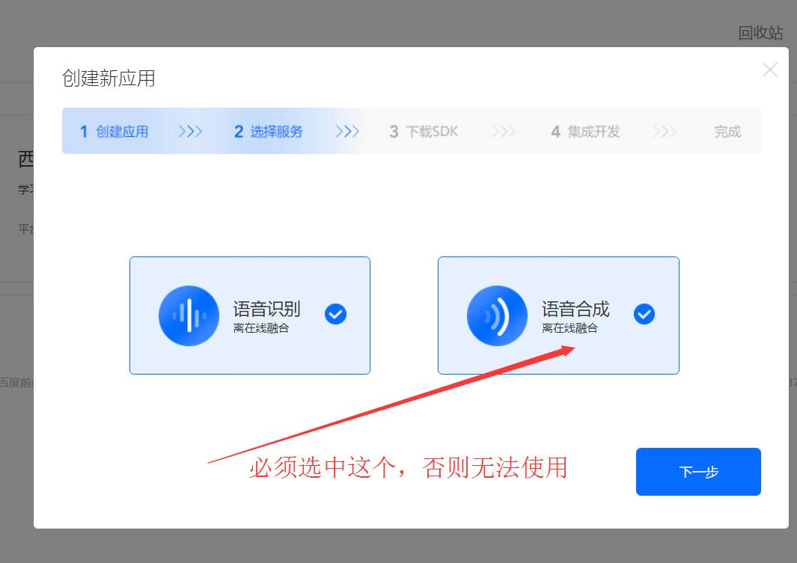
继续点击下一步，这一步，什么都不用选，继续点击下一步。
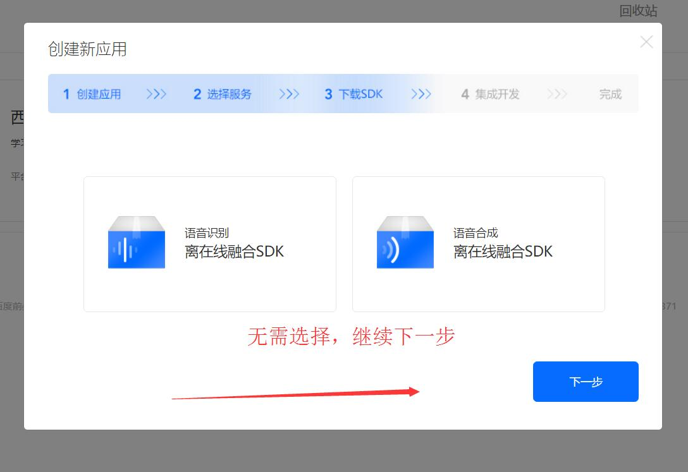
这里选中 android 类型，包名填写你的域名的倒写形式，如 com.baidu.www ，然后点击下一步
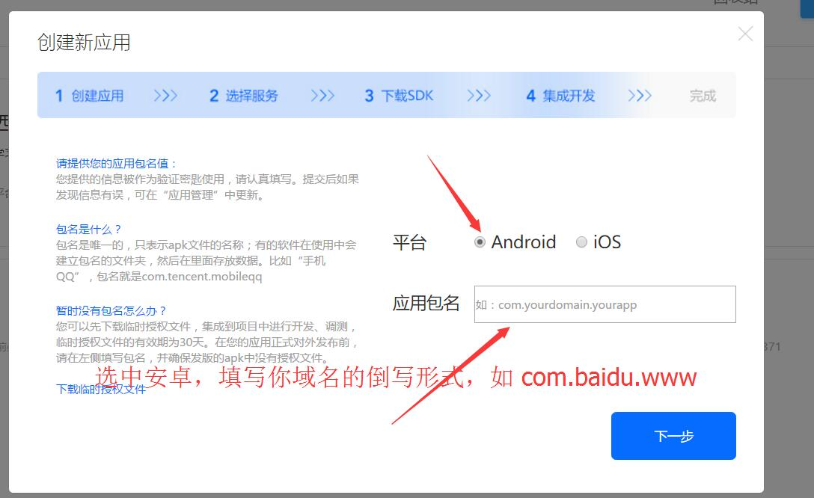
到这里就创建成功了，点击服务器设置关闭此弹层即可
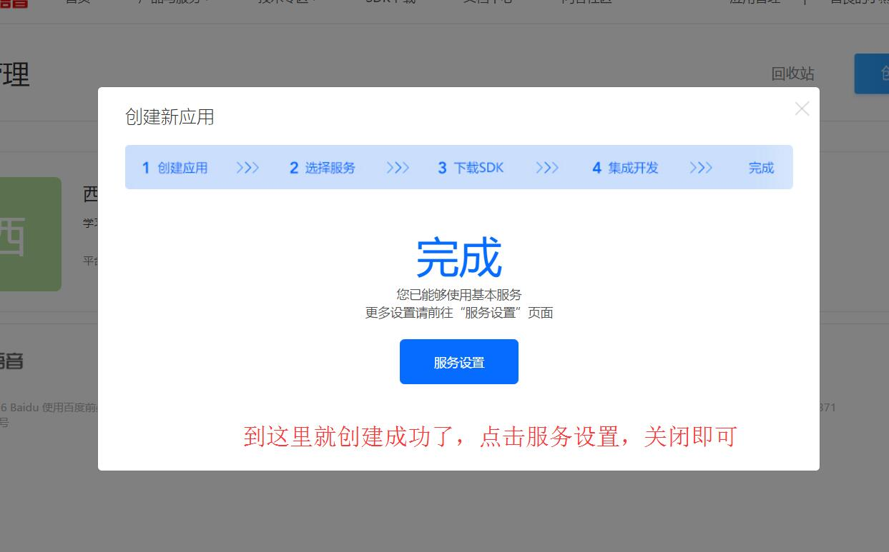
点击应用管理，找到你刚刚创建的应用，点击 查看key
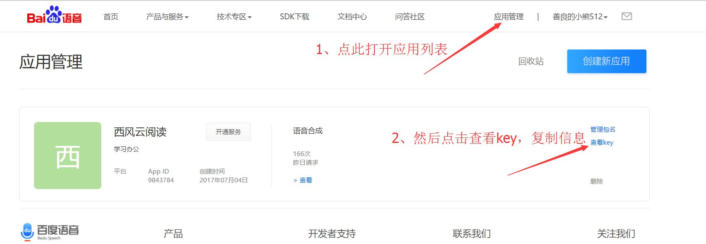
复制 api key 粘贴到 插件设置页面的 【百度语音api key】中
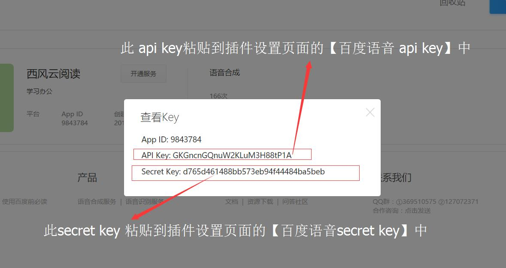
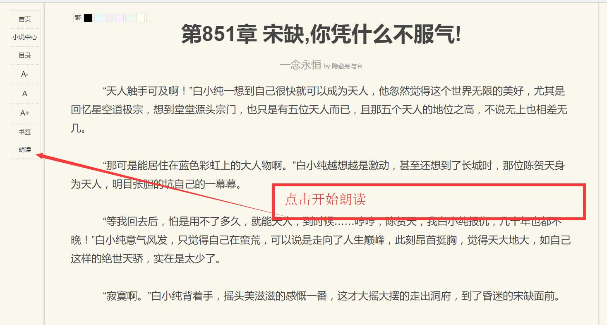
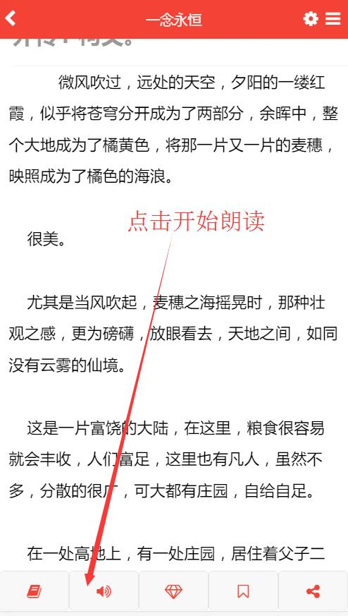
如果确定你的服务器支持伪静态，请复制对应你服务器的伪静态规则到你当前可用的规则底部，然后到插件后台-设置–启用伪静态，选择【是】，提交，更新缓存。
目前只提供apache、IIS6、IIS7、nginx服务器下的伪静态规则，其他服务器请根据apache的自行改写
RewriteCond %{QUERY_STRING} ^(.*)
RewriteRule ^jamesonread/?$ plugin.php?id=jameson_read&contrl=index&act=index&%1
RewriteCond %{QUERY_STRING} ^(.*)$
RewriteRule ^jamesonread/author/([a-zA-Z]+)/?([0-9]+)?/?$ plugin.php?id=jameson_read&contrl=author&act=$1&$1_id=$2&%1
RewriteCond %{QUERY_STRING} ^(.*)$
RewriteRule ^jamesonread/read/([0-9]+)/([0-9]+)/?([0-9]+)?/?$ plugin.php?id=jameson_read&contrl=index&act=read&tid=$1&pid=$2&fxuid=$3&%1
RewriteCond %{QUERY_STRING} ^(.*)$
RewriteRule ^jamesonread/zuozhe/([0-9]+)/?p?/?([0-9])?/?$ plugin.php?id=jameson_read&contrl=index&act=zuozhe&zuozhe_id=$1&p=$2&%1
RewriteCond %{QUERY_STRING} ^(.*)$
RewriteRule ^jamesonread/([a-zA-Z]+)/?$ plugin.php?id=jameson_read&contrl=index&act=$1&%1
RewriteCond %{QUERY_STRING} ^(.*)$
RewriteRule ^jamesonread/shaixuan/([a-zA-Z][a-zA-Z_]+)/([0-9]+)/?([a-zA-Z][a-zA-Z_]+)?/?([0-9]+)?/?([a-zA-Z][a-zA-Z_]+)?/?([0-9]+)?/?([a-zA-Z][a-zA-Z_]+)?/?([0-9]+)?/?p?/?([0-9]+)?/?$ plugin.php?id=jameson_read&contrl=index&act=shaixuan&$1=$2&$3=$4&$5=$6&$7=$8&p=$9&%1
RewriteCond %{QUERY_STRING} ^(.*)$
RewriteRule ^jamesonread/([a-zA-Z]+)/([0-9]+)/?p?/?([0-9]+)?/?$ plugin.php?id=jameson_read&contrl=index&act=$1&$1_id=$2&p=$3&%1
RewriteRule ^(.*)/jamesonread/?$ $1/plugin.php?id=jameson_read&contrl=index&act=index&%1
RewriteRule ^(.*)/jamesonread/author/([a-zA-Z]+)/?([0-9]+)?/?$ $1/plugin.php?id=jameson_read&contrl=author&act=$2&$2_id=$3&%1
RewriteRule ^(.*)/jamesonread/read/([0-9]+)/([0-9]+)/?([0-9]+)?/?$ $1/plugin.php?id=jameson_read&contrl=index&act=read&tid=$2&pid=$3&fxuid=$4&%1
RewriteRule ^(.*)/jamesonread/zuozhe/([0-9]+)/?p?/([0-9]+)?/?$ $1/plugin.php?id=jameson_read&contrl=index&act=zuozhe&zuozhe_id=$2&p=$3&%1
RewriteRule ^(.*)/jamesonread/([a-zA-Z]+)/?$ $1/plugin.php?id=jameson_read&contrl=index&act=$2&%1
RewriteRule ^(.*)/jamesonread/([a-zA-Z]+)/([0-9]+)/?p?/?([0-9]+)?/?$ $1/plugin.php?id=jameson_read&contrl=index&act=$2&$2_id=$3&p=$4&%1
RewriteRule ^(.*)/jamesonread/shaixuan/([a-zA-Z_][a-zA-Z_]+)/([0-9]+)/?([a-zA-Z_][a-zA-Z_]+)?/?([0-9]+)?/?([a-zA-Z_][a-zA-Z_]+)?/?([0-9]+)?/?([a-zA-Z_][a-zA-Z_]+)?/?([0-9]+)?/?p?/?([0-9]+)?/?$ $1/plugin.php?id=jameson_read&contrl=index&act=shaixuan&$2=$3&$4=$5&$6=$7&$8=$9&p=$10&%1
<rule name="jamesonreadindex">
<match url="^(.*)/jamesonread/?$" />
<action type="Rewrite" url="{R:1}/plugin.php?id=jameson_read&contrl=index&act=index" />
</rule>
<rule name="jamesonreadauthor">
<match url="^(.*)/jamesonread/author/([a-zA-Z]+)/?([0-9]+)?/?$" />
<action type="Rewrite" url="{R:1}/plugin.php?id=jameson_read&contrl=author&act={R:2}&{R:2}_id={R:3}" />
</rule>
<rule name="jamesonreadzuozhe">
<match url="^(.*)/jamesonread/zuozhe/([0-9]+)/?p?/?([0-9]+)/?$" />
<action type="Rewrite" url="{R:1}/plugin.php?id=jameson_read&contrl=index&act=zuozhe&zuozhe_id={R:2}&p={R:3}" />
</rule>
<rule name="jamesonreadread">
<match url="^(.*)/jamesonread/read/([0-9]+)/([0-9]+)/?([0-9]+)?/?$" />
<action type="Rewrite" url="{R:1}/plugin.php?id=jameson_read&contrl=index&act=read&tid={R:2}&pid={R:3}&fxuid={R:4}" />
</rule>
<rule name="jamesonreadshaixuan">
<match url="^(.*)/jamesonread/shaixuan/([a-zA-Z][a-zA-Z_]+)/([0-9]+)/?([a-zA-Z][a-zA-Z_]+)?/?([0-9]+)?/?([a-zA-Z][a-zA-Z_]+)?/?([0-9]+)?/?([a-zA-Z][a-zA-Z_]+)?/?([0-9]+)?/?p?/?([0-9]+)?/?$" />
<action type="Rewrite" url="{R:1}/plugin.php?id=jameson_read&contrl=index&act=shaixuan&{R:2}={R:3}&{R:4}={R:5}&{R:6}={R:7}&{R:8}={R:9}&p={R:10}" />
</rule>
<rule name="jamesonreadcontrl">
<match url="^(.*)/jamesonread/([a-zA-Z]+)/?([0-9]+)?/?p?/?([0-9]+)?/?$" />
<action type="Rewrite" url="{R:1}/plugin.php?id=jameson_read&contrl=index&act={R:2}&{R:2}_id={R:3}&p={R:4}" />
</rule>
rewrite ^([^\.]*)/jamesonread/?$ $1/plugin.php?id=jameson_read:jameson_read&contrl=index&act=index last;
rewrite ^([^\.]*)/jamesonread/?$ $1/plugin.php?id=jameson_read&contrl=index&act=index last;
rewrite ^([^\.]*)/jamesonread/author/([a-zA-Z]+)/?([0-9]+)?/?$ $1/plugin.php?id=jameson_read&contrl=author&act=$2&$2_id=$3 last;
rewrite ^([^\.]*)/jamesonread/read/([0-9]+)/([0-9]+)/?([0-9]+)?/?$ $1/plugin.php?id=jameson_read&contrl=index&act=read&tid=$2&pid=$3&fxuid=$4 last;
rewrite ^([^\.]*)/jamesonread/zuozhe/([0-9]+)/?p?/?([0-9])?/?$ $1/plugin.php?id=jameson_read&contrl=index&act=zuozhe&zuozhe_id=$2&p=$3 last;
rewrite ^([^\.]*)/jamesonread/([a-zA-Z]+)/?$ $1/plugin.php?id=jameson_read&contrl=index&act=$2 last;
rewrite ^([^\.]*)/jamesonread/shaixuan/([a-zA-Z][a-zA-Z_]+)/([0-9]+)/?([a-zA-Z][a-zA-Z_]+)?/?([0-9]+)?/?([a-zA-Z][a-zA-Z_]+)?/?([0-9]+)?/?([a-zA-Z][a-zA-Z_]+)?/?([0-9]+)?/?p?/?([0-9]+)?/?$ $1/plugin.php?id=jameson_read&contrl=index&act=shaixuan&$2=$3&$4=$5&$6=$7&$8=$9&p=$10 last;
rewrite ^([^\.]*)/jamesonread/([a-zA-Z]+)/([0-9]+)/?p?/?([0-9]+)?/?$ $1/plugin.php?id=jameson_read&contrl=index&act=$2&$2_id=$3&p=$4 last;
webapp 由html文件和js文件组成，可放在任意可从浏览器访问到的位置，可使用论坛帐号登录和在webapp中注册，适合作为小说插件的手机端替换或者单独打包为app
源码由两部分组成，webapp文件夹+api.php文件
进入网站后台-应用-小说阅读器-手机版-拉到底部，填写app相关的选项
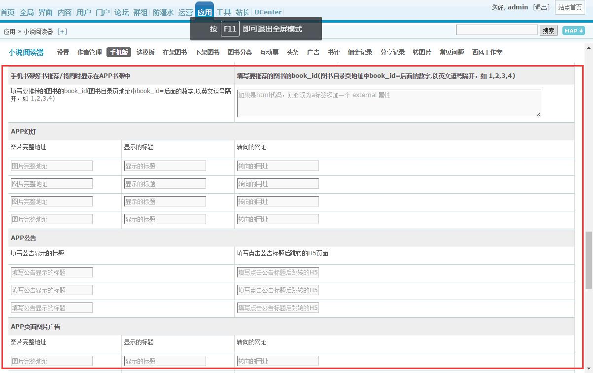
做好这些后，布置就完成了，去 网站后台-应用-小说阅读器-手机版–拉到底部–app相关的选项填写上即可。 接下来你就可以将地址告知你的用户或者去打包了
本插件中设置选项较多，如下图，将在这里介绍用途
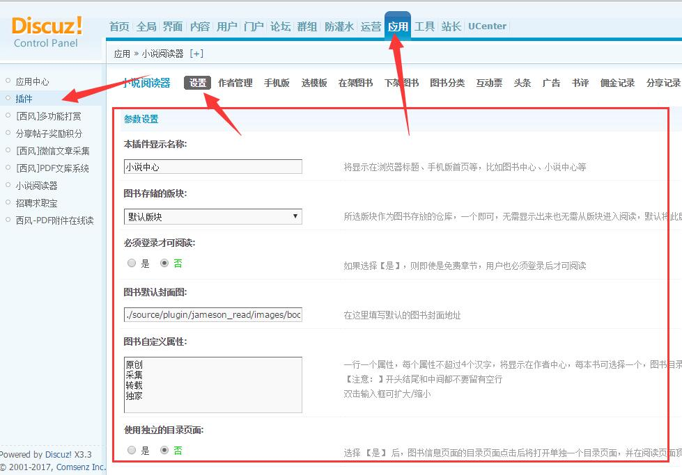
PC幻灯图片：显示在PC版首页的幻灯片。
填写幻灯图片的格式为
图片地址###跳转网址###图片标题###图片描述|||
可填写多组，最后一行末尾不要加 |||
PC端分享代码：将显示在阅读界面内容下方的分享按钮，如百度分享
discuz系统核心文件限定了移动端首页只能是forum.php，如果设置了其他模块比如插件（plugin.php等）为首页，当移动端上打开插件页面时，dz系统会强制跳转到forum.php即论坛首页面，造成无法在移动端打开插件。
所以如果想将小说中心设为首页，并保证手机端可正常打开，必须按照下述方法修改。
这可能是dz的bug，也可能是dz有意设计。
##有两种方法可以实现
第一种方法：
网站后台-界面-导航设置-小说中心-设为首页，并打开网站根目录下 source/class/discuz/discuz_application.php
找到第778行左右，将
dheader("location:$mobileurl");
替换为
// dheader("location:$mobileurl");
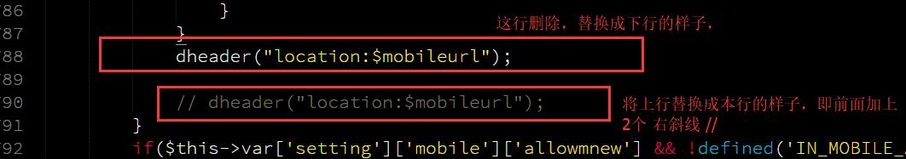
优点：简单，无需配置服务器设置
缺点：
1.网址带plugin.php尾巴；
2.此种设置方式对dz手机端无效，手机上首页仍然是forum.php即论坛首页，
第二种方法：
1、仍然需要修改 source/class/discuz/discuz_application.php 这个文件，找到第778行左右，将
dheader("location:$mobileurl");
替换为
// dheader("location:$mobileurl");
2、再到你的服务器管理界面中，比如windows上IIS或者Linux管理面板中，在默认文档设置中加一个默认首页 plugin.php ，并移动到第一个位置
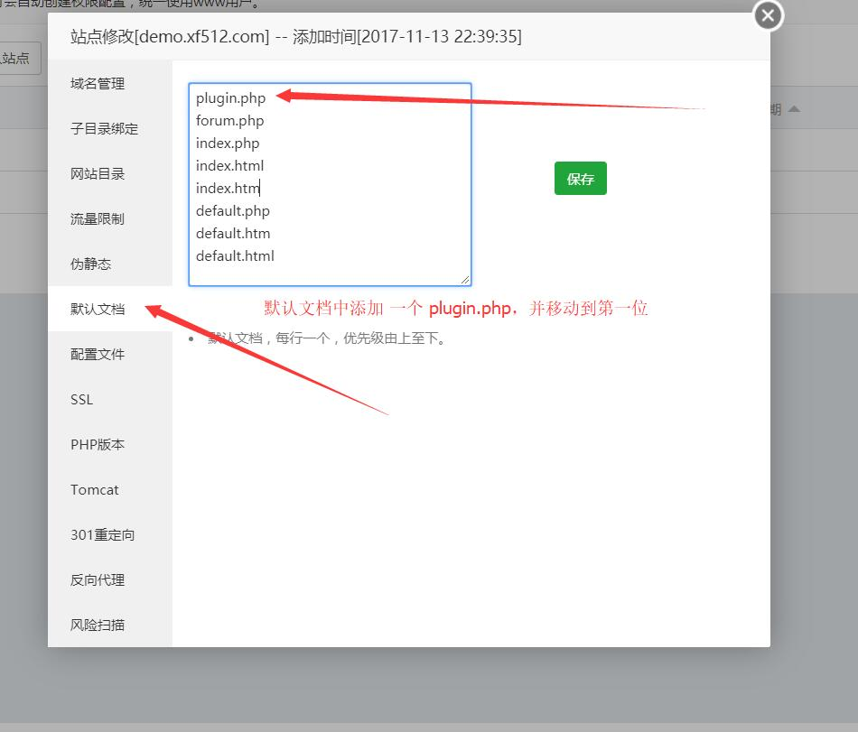
3、然后到网站根目录下，打开plugin.php文件，在第23行附近，将
if(!empty($_GET['id'])) {
list($identifier, $module) = explode(':', $_GET['id']);
$module = $module !== NULL ? $module : $identifier;
} else {
showmessage('plugin_nonexistence');
}
替换为
if(!empty($_GET['id'])) {
list($identifier, $module) = explode(':', $_GET['id']);
$module = $module !== NULL ? $module : $identifier;
} else {
$_GET['id'] = $identifier = $module = 'jameson_read';
}
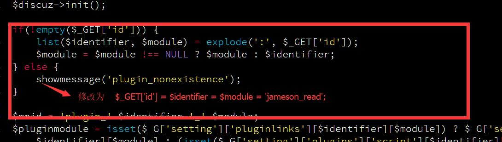
优点：网址无plugin.php尾巴，手机版输入网址后直接显示插件页面
缺点：需要有权限操作服务器，更改服务器配置。网站后台-界面-导航 中首页设置将失效，无论如何设置，网站首页始终会是插件